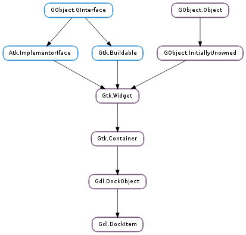

| Subclasses: | Gdl.DockNotebook, Gdl.DockPaned |
|---|
| static | new(name, long_name, behavior) |
| static | new_with_pixbuf_icon(name, long_name, pixbuf_icon, behavior) |
| static | new_with_stock(name, long_name, stock_id, behavior) |
| bind(dock) | |
| dock_to(target, position, docking_param) | |
| get_behavior_flags() | |
| get_child() | |
| get_drag_area(rect) | |
| get_grip() | |
| get_orientation() | |
| get_tablabel() | |
| hide_grip() | |
| hide_item() | |
| iconify_item() | |
| is_closed() | |
| is_iconified() | |
| is_placeholder() | |
| lock() | |
| notify_deselected() | |
| notify_selected() | |
| or_child_has_focus() | |
| preferred_size(req) | |
| set_behavior_flags(behavior, clear) | |
| set_child(child) | |
| set_default_position(reference) | |
| set_orientation(orientation) | |
| set_tablabel(tablabel) | |
| show_grip() | |
| show_item() | |
| unbind() | |
| unlock() | |
| unset_behavior_flags(behavior) |
| Name | Type | Flags | Description |
|---|---|---|---|
| behavior | Gdl.DockItemBehavior | r/w | General behavior for the dock item (i.e. whether it can float, if it’s locked, etc.) |
| closed | bool | r/w | Whether the widget is closed. |
| iconified | bool | r/w | If set, the dock item is hidden but it has a corresponding icon in the dock bar allowing to show it again. |
| locked | bool | r/w | If set, the dock item cannot be dragged around and it doesn’t show a grip |
| orientation | Gtk.Orientation | r/w | Orientation of the docking item |
| preferred-height | int | r/w | Preferred height for the dock item |
| preferred-width | int | r/w | Preferred width for the dock item |
| resize | bool | r/w | If set, the dock item can be resized when docked in a GtkPanel widget |
| Name | Parameters | Return | Description |
|---|---|---|---|
| deselected | Signals that this dock has been deselected in a switcher. | ||
| dock-drag-begin | Signals that the dock item has begun to be dragged. | ||
| dock-drag-end | bool | Signals that the dock item dragging has ended. | |
| dock-drag-motion | Gdk.Device, int, int | Signals that a dock item dragging motion event has occured. | |
| move-focus-child | Gtk.DirectionType | The ::move-focus-child signal is emitted when a change of focus is requested for the child widget of a dock item. The dir parameter specifies the direction in which focus is to be shifted. | |
| selected | Signals that this dock has been selected from a switcher. |
| Name | Type | Access |
|---|---|---|
| object | Gdl.DockObject | r |
Bases: Gdl.DockObject
| Parameters: |
|
|---|---|
| Returns: | The newly created dock item grip widget. |
| Return type: |
Creates a new dock item widget.
| Parameters: |
|
|---|---|
| Returns: | The newly created dock item grip widget. |
| Return type: |
Creates a new dock item grip widget with a given pixbuf icon.
| Parameters: |
|
|---|---|
| Returns: | The newly created dock item grip widget. |
| Return type: |
Creates a new dock item grip widget with a given stock id.
| Parameters: | dock (Gtk.Widget) – The Gdl.Dock widget to bind it to. Note that this widget must be a type of Gdl.Dock. |
|---|
Binds this dock item to a new dock master.
| Parameters: |
|
|---|
Relocates a dock item to a new location relative to another dock item.
| Returns: | the behavior of the item. |
|---|---|
| Return type: | Gdl.DockItemBehavior |
Retrieves the behavior of the item.
| Returns: | pointer to child of the Gdl.DockItem |
|---|---|
| Return type: | Gtk.Widget |
Gets the child of the Gdl.DockItem, or None if the item contains no child widget. The returned widget does not have a reference added, so you do not need to unref it.
| Parameters: | rect (cairo.RectangleInt) – A pointer to a Gdk.Rectangle that will receive the drag position |
|---|
Gets the size and the position of the drag window in pixels.
| Returns: | Returns the current label widget. |
|---|---|
| Return type: | Gtk.Widget |
This function returns the dock item’s grip label widget.
| Returns: | the orientation of the object. |
|---|---|
| Return type: | Gtk.Orientation |
Retrieves the orientation of the object.
| Returns: | Returns the tab label widget. |
|---|---|
| Return type: | Gtk.Widget |
Gets the current tab label widget. Note that this label widget is only visible when the “switcher-style” property of the Gdl.DockMaster is set to Gdl.SwitcherStyle.TABS
This function hides the dock item’s grip widget.
This function hides the dock item. Since version 3.6, when dock items are hidden they are not removed from the layout.
The dock item close button causes the panel to be hidden.
This function iconifies the dock item. When dock items are iconified they are hidden, and appear only as icons in dock bars.
The dock item iconify button causes the panel to be iconified.
| Returns: | True if the dock item is closed. |
|---|---|
| Return type: | bool |
Checks whether a given Gdl.DockItem is closed. It can be only hidden or detached.
| Returns: | True if the dock item is iconified. |
|---|---|
| Return type: | bool |
Checks whether a given Gdl.DockItem is iconified.
| Returns: | True if the dock item is a placeholder |
|---|---|
| Return type: | bool |
Checks whether a given Gdl.DockItem is a placeholder created by the Gdl.DockLayout object and does not contain a child.
This function locks the dock item. When locked the dock item cannot be dragged around and it doesn’t show a grip.
This function emits the deselected signal. It is used by Gdl.Switcher to let clients know that this item has been deselected.
This function emits the selected signal. It is to be used by Gdl.Switcher to let clients know that this item has been switched to.
| Returns: | True if the dock item or its child widget has focus; False otherwise. |
|---|---|
| Return type: | bool |
Checks whether a given Gdl.DockItem or its child widget has focus. This check is performed recursively on child widgets.
| Parameters: | req (Gtk.Requisition) – A pointer to a Gtk.Requisition into which the preferred size will be written. |
|---|
Gets the preferred size of the dock item in pixels.
| Parameters: |
|
|---|
This function sets the behavior of the dock item.
| Parameters: | child (Gtk.Widget or None) – a Gtk.Widget |
|---|
Set a new child for the Gdl.DockItem. This child is different from the children using the Gtk.Container interface. It is a private child reserved for the widget implementation.
If a child is already present, it will be replaced. If widget is None the child will be removed.
| Parameters: | reference (Gdl.DockObject) – The Gdl.DockObject which is the default dock for item |
|---|
This method has only an effect when you add you dock_item with Gdl.DockItemBehavior.NEVER_FLOATING. In this case you have to assign it a default position.*
Deprecated 3.6: This function is doing nothing now.
| Parameters: | orientation (Gtk.Orientation) – The orientation to set the item to. If the orientation is set to Gtk.Orientation.VERTICAL, the grip widget will be shown along the top of the edge of item (if it is not hidden). If the orientation is set to Gtk.Orientation.HORIZONTAL, the grip widget will be shown down the left edge of the item (even if the widget text direction is set to RTL). |
|---|
This function sets the layout of the dock item.
| Parameters: | tablabel (Gtk.Widget) – The widget that will become the tab label. |
|---|
Replaces the current tab label widget with another widget. Note that this label widget is only visible when the “switcher-style” property of the Gdl.DockMaster is set to Gdl.SwitcherStyle.TABS
This function shows the dock item’s grip widget.
This function shows the dock item. When dock items are shown, they are displayed in their normal layout position.
Unbinds this dock item from it’s dock master.
This function unlocks the dock item. When unlocked the dock item can be dragged around and can show a grip.
| Parameters: | behavior (Gdl.DockItemBehavior) – Behavior flags to turn off |
|---|
This function sets the behavior of the dock item.